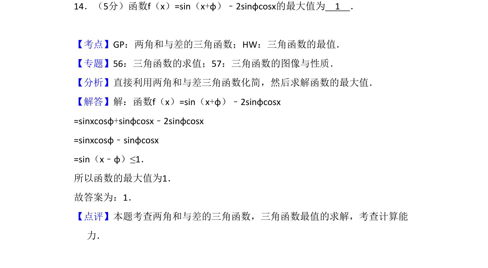
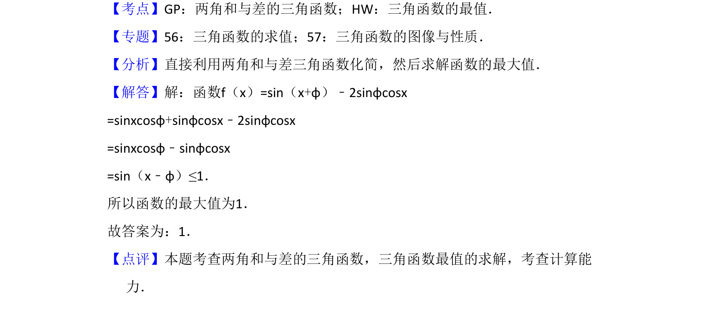

考点：两角和与差的三角函数 三角函数最值

本题考查利用两角和与差的三角函数公式化简函数，并求三角函数的最大值。

📄 原 PDF 第 10 页：
素材/真题/吉林/2008-2024·（吉林）数学高考真题/2014年高考数学试卷（文）（新课标Ⅱ）（解析卷）.pdf
14．（5分）函数f（x）=sin（x+φ）﹣2sinφcosx的最大值为 1 ．
【考点】GP：两角和与差的三角函数；HW：三角函数的最值．菁优网版权所有 【专题】56：三角函数的求值；57：三角函数的图像与性质． 【分析】直接利用两角和与差三角函数化简，然后求解函数的最大值． 【解答】解：函数f（x）=sin（x+φ）﹣2sinφcosx =sinxcosφ+sinφcosx﹣2sinφcosx =sinxcosφ﹣sinφcosx =sin（x﹣φ）≤1． 所以函数的最大值为1． 故答案为：1． 【点评】本题考查两角和与差的三角函数，三角函数最值的求解，考查计算能 力．